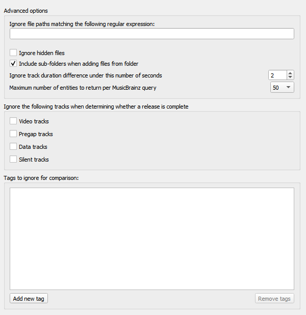

Advanced Options
{kind=link}
Ignore file paths matching the following regular expression
You can specify patterns for files and directories that Picard should never load. For example, if you set this to the regular expression
\.bak$any file ending in “.bak” will be ignored when loading files.
Ignore hidden files
If this option is enabled then hidden files and directories will not be loaded. This also includes any file or subdirectory inside a hidden directory.
Include sub-folders when adding files from folders
If this option is enabled Picard will load all audio files in the selected directory and all its subdirectories. If disabled only audio files in the selected directory will be loaded.
Ignore track duration difference under this number of seconds
This specifies the number of seconds that a file can differ in length from the length in the MusicBrainz database and still be considered to be the same. The default value is 2 seconds.
Maximum number of entities to return per MusicBrainz query
This sets the maximum number of results returned for queries made to the MusicBrainz website. The default value is 50 results. On Picard v2.8.1 and earlier, this value was fixed at a maximum of 25 responses.
Ignore the following tracks when determining whether a release is complete
Missing tracks of the selected type (i.e.: video, pregap, data or silence) will be ignored when determining whether a release is considered to be complete. For example, if “video” is selected then a release with a bonus video will be marked as complete if it has all the audio tracks matched with a file even if the video file is missing.
Tags to ignore for comparison
Tags in this list will not be considered when comparing the existing file metadata to the data retrieved from MusicBrainz. If the only difference between the file’s metadata and the metadata retrieved from MusicBrainz is a tag listed in this ignore list then the file will be considered unmodified.
See also
Details: Network / Matching / Maintenance